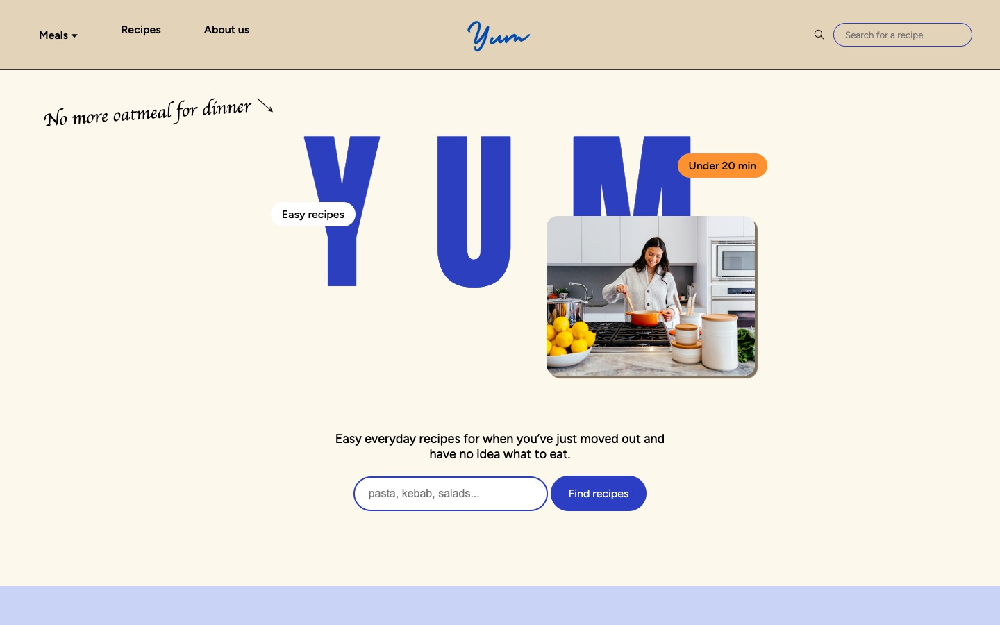
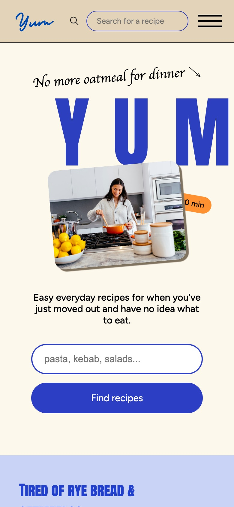
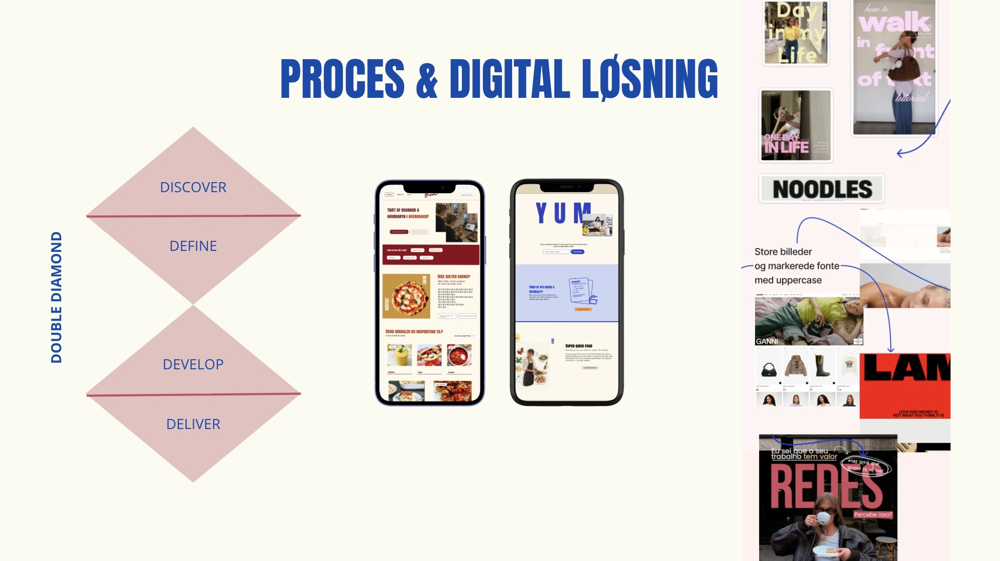

Skoleprojekt · Multimediedesign
Tema 8 · Web II · 2. semester
YUM
En dynamisk opskriftsside til unge, der lige er flyttet hjemmefra og ikke ved, hvad de skal lave til aftensmad. Sitet henter opskrifter fra et API og gør det nemt at finde noget hurtigt og simpelt at lave.
Skoleprojekt – ikke en rigtig hjemmeside. YUM er lavet som eksamensopgave på Multimediedesign. Det er ikke en rigtig hjemmeside i drift, og opskrifterne kommer fra et gratis test-API.

Opgave
Tema 8 · Web II
Multimediedesign, E2026
Team
Gruppe 9: Emma Lejel, Lachlan Ryan og Sandra Møller Gregersen
Værktøjer
HTML, CSS, JavaScript, DummyJSON API, Figma og GitHub
Type
Dynamisk website uden frameworks, hostet på GitHub Pages
Udfordringen
Ikke mere havregryn til aftensmad
Målgruppen er unge, der lige er flyttet hjemmefra. De vil gerne lave rigtig mad, men tid og sværhedsgrad er de største barrierer. Derfor skulle sitet gøre det hurtigt at finde en opskrift, der passer til både måltidet, tiden og evnerne.
Data kommer fra DummyJSON Recipes API, så hele indholdet bygges med JavaScript ud fra de opskrifter, API'et sender tilbage.

Løsningen
Find den rigtige opskrift på få klik
- Filtre for måltid, køkken og tid, som kan kombineres med søgning.
- Filtrene gemmes i URL'en, så et resultat kan deles som link, og tilbage-knappen virker.
- En side til hver opskrift med ingredienser, fremgangsmåde, tid og sværhedsgrad.
- Giver en søgning ingen resultater, kan man ønske opskriften via en formular.

Teknik & bæredygtighed
Let kode, der kører direkte i browseren
Sitet er bygget i ren HTML, CSS og JavaScript uden frameworks. Opskrifterne hentes én gang pr. side og filtreres i browseren, fordi API'et ikke kan kombinere flere filtre i ét kald. Listen viser 12 opskrifter ad gangen, så billederne først hentes, når man beder om flere.
Vi arbejdede på hver vores branch i Git og mergede ind i main, når en del virkede.
3,3 MB → 0,16 MB
Herobilledet blev konverteret til WebP, så forsiden indlæses langt hurtigere og bruger mindre data.
Prøv selv
Hele hjemmesiden
Bemærk: skoleprojekt og ikke en rigtig hjemmeside. Søg efter en opskrift, brug filtrene eller åbn en opskrift.